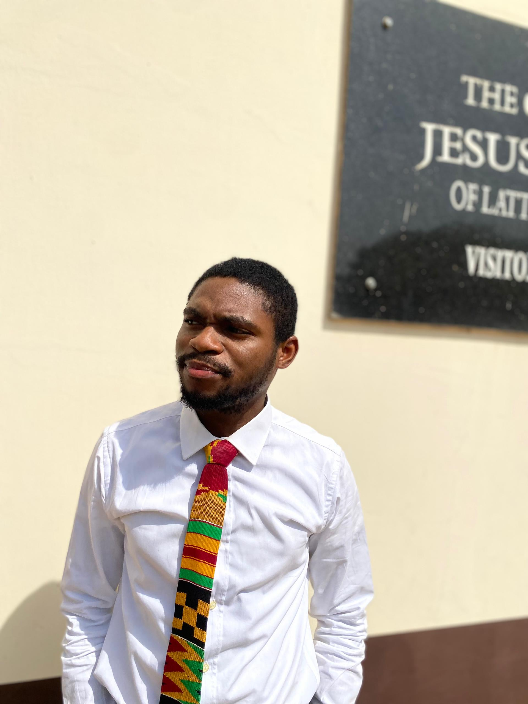

About Me
 My name is Lehi Daniel. I am from the Southern part of Nigeria, Akwa Ibom state. I currently work remotely. I love spending time with friends and family outdoors. I also love to travel and learn new things. Beyond work, I love spending time outdoors with friends and family, traveling to new places, and constantly learning new things. My curiosity and adaptability help me embrace challenges with confidence. I'm also passionate about web development, digital systems, and leveraging technology to improve efficiency. I believe in honesty, dedication, and continuous growth. Whether it's leading a team, managing data, or exploring innovative solutions, I bring enthusiasm and a results-driven mindset to everything I do.
Akwa Ibom is the largest producer of crude oil in Nigeria, contributing significantly to the country’s economy. The state is part of the Niger Delta region, known for its vast oil and gas reserves. The Godswill Akpabio International Stadium, located in Uyo, is one of the most modern and well-equipped stadiums in Africa. With a seating capacity of 30,000, it has hosted several international football matches, including Super Eagles games. Akwa Ibom is culturally rich, with three major ethnic groups: the Ibibio, Annang, and Oron. Each group has a distinct language, customs, and traditions that contribute to the state's vibrant cultural heritage.